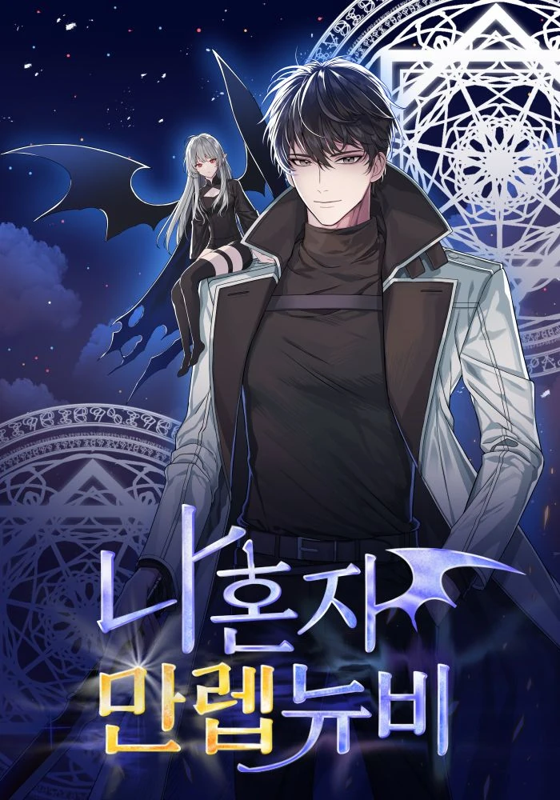

Manhwas
Na Honjaman Level Up

In a world where awakened beings called “Hunters” must battle deadly monsters to protect humanity, Sung
Jinwoo,
nicknamed “the weakest hunter of all mankind,” finds himself in a constant struggle for survival. One
day,
after
a brutal encounter
in an overpowered dungeon wipes out his party and threatens to end his life, a mysterious System chooses
him
as
its sole player:
Jinwoo has been granted the rare opportunity to level up his abilities, possibly beyond any known
limits.
Follow
Jinwoo’s journey
as he takes on ever-stronger enemies, both human and monster, to discover the secrets deep within the
dungeons
and the ultimate extent
of his powers.
Jeonjijeok Dokja Sijeom

Synopsis: Back then, Dok-Ja had no idea. He had no idea his favorite web novel 'Three Ways to Survive
the
Apocalypse' was going to come to life,
and that he would become the only person to know how the world was going to end. He also had no idea he
would
end up becoming the protagonist
of this novel-turned-reality. Now, Dok-Ja will go on a journey to change the course of the story and
save
humankind once and for all.
Myeolmang Ihuui Segye

Synopsis: Faced with imminent defeat and certain death, would you choose to run – or continue to fight
for a
doomed world? When mysterious towers
appear across the world, summoning monsters that prey on mankind, this is the choice presented to the
Tower
Walkers – adventurers with
special powers to fight the monsters. On the brink of death, they can choose to use a “regression stone”
to
return to the past for a second
chance, though this decision places them in a separate timeline forever. Stubborn Tower Walker Jae-Hwan
rejects
this choice, choosing to fight
for the original timeline, and learning shocking secrets about the Tower along the way.
4000 Nyeon Mane Gwihwanhan Daemadosa

Synopsis: Lucas Trowman was the greatest archmage in history until he was condemned by Demigod to spend
eternity
losing his mind.
But 4,000 years later, he’s thrust back into this world, into the body of Frei Blake, the weakest, most
un-talented student at
the prestigious Westroad Academy for mages. After all this time, the world of magic has barely
progressed. Could
this be the
work of Demigod? Determined to find out, Lucas seeks to reach the highest levels of power once again and
get his
revenge.
Naneun Madowangida

Sung-Hoon Lee is nothing but a victim of a changing world, a powerless man in a land infested with
beasts and
magic. Monsters from
another world invaded earth, and they brought with them a sickness that pushes Sung-Hoon’s mother into
an
endless sleep. To pay
off her medical bills, he braved a dangerous job as bait used by powerful superhumans called Awakeners
to hunt
monsters. But when
he found himself at death’s door, the image of his past life flashes through his mind. There, he found
his
truth: he is the
reincarnation of the Sorcerer King!
Na Honja Mallep Newbie

Kang Jin-Hyeok, a gaming streamer, and content creator is the only person who has cleared the game,
[Tower of
Trials]. However, as the game’s popularity declines, it becomes increasingly difficult for him to
continue
making a living as a content creator. Jinhyeok prepares to end his 11-year-long relationship with the
game and
say goodbye to his humble group of subscribers. But on that very day, the Tower of Trials appears in
reality
with a message saying that humanity will perish unless all players clear each floor within 90 days.
Jin-Hyeok,
who knows the game better than anyone, decides to use his knowledge to his advantage and dominate the
tower.
It’s time to show everyone what a hardcore gamer can do!